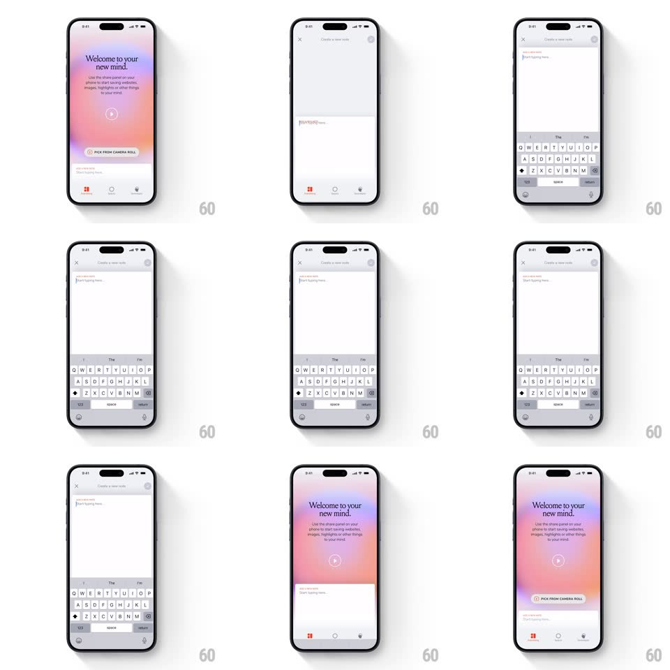

Media
Frame-by-frame

Rebuild this interaction 1:1: mymind's note composer - tap the persistent "Create a new note" field and a full-screen writing sheet slides up in lockstep with the keyboard.

Rebuild this interaction 1:1: mymind's note composer - tap the persistent "Create a new note" field and a full-screen writing sheet slides up in lockstep with the keyboard.
## Integration
Integration: stack-agnostic spec - springs given as stiffness/damping, timed motions as duration + curve; map every value to your framework and animation library of choice.
## Scene
The mymind home (gradient mesh welcome card, bottom nav) carries a persistent input field at top or bottom ("Create a new note"). Tapping it opens the composer: a clean white full-screen sheet with a close X, the note body ("Start typing here."), and the keyboard.
## Motion spec
Pattern: sheet + keyboard synchronized rise.
- Tap the field: the composer sheet slides up from the bottom edge (spring ~360/30, ~400ms) exactly in step with the keyboard's own rise - the sheet's bottom padding tracks the keyboard height frame-by-frame so the cursor line never gets covered.
- The field the user tapped morphs into the composer's text area: its text and caret carry over, the field's rounded rect expanding to full width (bounds animation, 300ms).
- The home content behind scales down slightly (scale 0.96) and dims (black 25%) as the sheet covers it.
- The close X and the send/save button fade in after the sheet lands (150ms, 80ms apart).
- Dismiss (tap X or drag down): the sheet and keyboard fall together; if the note has text, the sheet collapses back into the persistent field showing a saved-hint state.
## Calibration
- The sheet and keyboard must move as one unit - no gap ever opens between them.
- The composer is typographically spare: one text area, no toolbar chrome until typing starts.
## Reduced motion
Sheet fades in already above the keyboard.
## Don't miss
- The gradient mesh of the welcome card is the brand moment behind the sheet - keep it visible at the edges until the sheet fully covers it.
- The caret is already blinking when the sheet lands; focus never waits for a second tap.